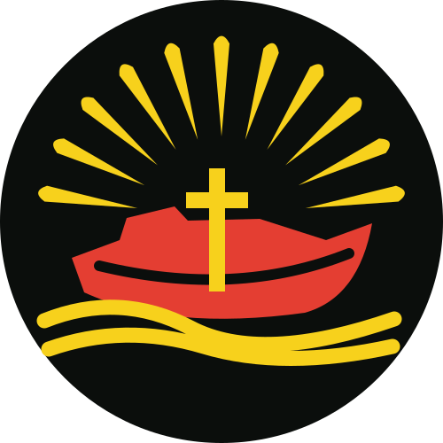
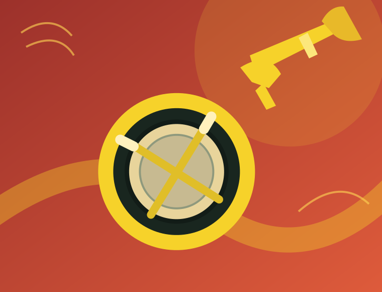

O começo
Fundação do clube e primeira cerimônia de admissão de lenço, no Sindicato dos Ensacadores.
PARANAGUÁ • PARANÁ • DESDE 1982
Uma história que ilumina caminhos.
Fé que inspira. Amizades que permanecem. Aventuras que ensinam. Há gerações, crescemos juntos e aprendemos a servir.


NOSSA HISTÓRIA
O Luzeiros do Sul é feito de pessoas, memórias e uma missão que atravessa gerações. Cada encontro é uma oportunidade de crescer.
UMA HISTÓRIA QUE COMEÇOU EM
1982. 07 DE FEVEREIRO • PARANAGUÁ, PRQUATRO DÉCADAS DE FÉ, SERVIÇO E AVENTURA
Fundado em 7 de fevereiro de 1982, em Paranaguá, o Luzeiros do Sul recebeu seu nome em homenagem à lancha missionária Luzeiro do Sul, ligada ao atendimento das comunidades do litoral paranaense.
Os primeiros passos foram conduzidos por Ademar Zabel e Marta Tomazine. Desde então, várias gerações construíram essa trajetória entre cerimônias de admissão, especialidades, ações solidárias, acampamentos, fanfarra e camporis.
Mais do que um conjunto de conquistas, nossa história é feita de pessoas que aprenderam a caminhar juntas e a compartilhar a fé. Hoje e Sempre.
Leia a história completa Consultar cadastro oficialDe diretores e conselheiros aos desbravadores que seguem escrevendo essa história, cada capítulo carrega novas amizades e um mesmo propósito.
Descubra a história completa Imagem vinculada ao cadastro do clube na plataforma adventista. Pode depender da disponibilidade do servidor original.*O registro oficial lista reconhecimentos de cinco estrelas em 2016, 2018, 2023, 2024 e 2025.
MARCOS DA CAMINHADA
Alguns momentos importantes na trajetória do Luzeiros do Sul.
Fundação do clube e primeira cerimônia de admissão de lenço, no Sindicato dos Ensacadores.
A fanfarra ganha força, acompanhando o clube em camporis, apresentações e conquistas.
Reativação da fanfarra, atividades missionárias e a direção de Luiz Carlos Goulart Júnior em 2010 e 2011.
Participação em grandes camporis, incluindo os encontros sul-americanos realizados em Barretos.
Três anos consecutivos com reconhecimento de Clube Cinco Estrelas, segundo o cadastro oficial.
Especialidades, eventos, serviço à comunidade e a preparação para o Campori Barretos 2027.
Síntese histórica elaborada a partir do histórico detalhado, do cadastro oficial e das atividades informadas pela diretoria.
EQUIPE DE LIDERANÇA
Gente que organiza, orienta e segue escrevendo esta história com os desbravadores.
NOSSO PROPÓSITO
Mais que atividades, experiências que ajudam a formar caráter, cultivar amizades e viver a fé na prática.
Aprender a confiar em Deus, desenvolver valores e encontrar sentido no cuidado com o próximo.
Criar laços, fortalecer o trabalho em equipe e descobrir que ninguém precisa caminhar sozinho.
Explorar a natureza, desenvolver habilidades e transformar aprendizado em boas ações.
A VIDA NO CLUBE
O conhecimento ultrapassa as paredes da sala de aula. Aqui, ele ganha vida em descobertas, projetos e encontros.
Do excursionismo pedestre às atividades ao ar livre: superar desafios também é descobrir novas possibilidades.

Ritmo, disciplina, união e uma tradição musical que acompanha diferentes gerações do clube.
Visitas, ações comunitárias e iniciativas que transformam valores em atitudes concretas.
As artes desta seção são ilustrativas. Fotografias reais do clube podem ser acrescentadas com autorização.
PRÓXIMOS ENCONTROS
Momentos para viver juntos. Confira os próximos destaques da programação do Luzeiros do Sul.
Uma noite especial de encontro e música adventista.
Uma manhã com fanfarra, carrossel de atividades, dinâmicas e café.
A agenda está sendo atualizada. Acompanhe o clube para saber dos próximos encontros.
Programação sujeita a ajustes. Confirme horários e locais com a diretoria.
NOSSAS MEMÓRIAS
Os melhores momentos são aqueles que vivemos juntos. Estamos organizando uma galeria com registros autorizados das nossas atividades, aventuras e celebrações.
GALERIA FOTOGRÁFICA EM PREPARAÇÃOFAÇA PARTE DESSA HISTÓRIA
Quer conhecer mais sobre o Clube de Desbravadores Luzeiros do Sul? Encontre nossas informações no cadastro oficial e converse com a liderança sobre participação e atividades.
Conhecer o cadastro oficial